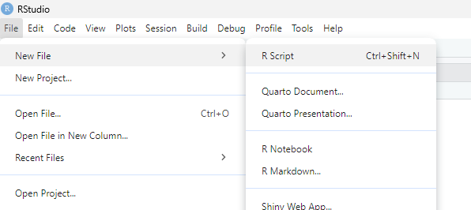
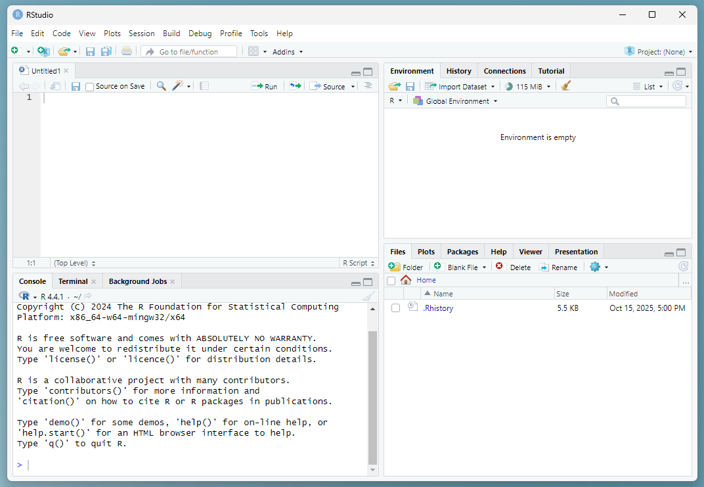

2 The RStudio interface
RStudio should now be open.
Before we do anything else, click on File > New File > R Script to create a new R script. This should open up a new panel in your window.

Now the RStudio window shoudl be divided into four quadrants:
- Top left: Code files - where you can see and edit your saved code files (called “scripts”), including this R markdown document. Some types of data can also be viewed here.
-
Bottom left:
Console- where you can input commands and see code that has been run. This is also where text-based output gets printed if you are using a regular R script instead of an R markdown file. -
Top right:
Environment- where you can see the saved data objects in your current R workspace. -
Bottom right: This has several useful tabs:
Files- which we’ve already been using;Help- where you can look up documentation about specific commands; andPlots- where images appear if you are using a regular R script instead of an R markdown file. (Ours will appear inside the code file instead.)
Most of the time when work you in R, you’ll type your code into a script file.

The RStudio interface
Warning! Although you can run code from both the script pane (top left) and console pane (bottom left), there is a big difference between them!!!
- If you type something into the script pane you can run it multiple times and save it for future use.
- If you type something into the console pane, it will run once and then disappear.
So make sure that you are typing your code into the right location!
This will almost always be a script file, not the console.